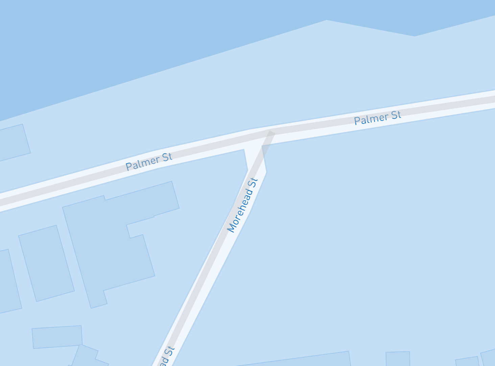

NOTE: This document is a work in progress. As a result, portions are missing and things will change.
Topomapper Developer Guide
This document outlines the things to know if you want to contribute to the project.
Contributing
If you want to contribute, you will need to do the following:
Find the namesake of a street with reputabule sources.
Develop a specifically crafted GeoJSON entry.
Namesakes (Odonyms)
The street names (odonyms) need to come from a reputable source as done any extra information to contextualise the namesake and/or relevant information.
GeoJSON Format
The GeoJson files are formatted accordingly:
{
"type": "Feature",
"properties": {
"name": "[street name]",
"city": "[TSV or CNS]",
"description": "[description including APA reference]",
"refs": "[APA 6 formatted reference]"
},
"geometry": {
"type": "LineString",
"coordinates": [
[lists of coordinates]
]
}
}
Referencing is mandatory — suggestions and submissions that are not properly referenced will not be included.
Example:
Getting the coordinates of the street can be had by using Overpass Turbo. The following query will get the street segments needed:
[out:json][timeout:25];
// gather results
(
// query part for: "highway=*""
node["highway"]({{bbox}});
way["highway"]({{bbox}});
relation["highway"]({{bbox}});
);
// print results
out body;
>;
out skel qt;
You can find the coordinates by finding the appropriate segment on Overpass Turbo and then finding the corresponding segment in the /datafiles/[tsv/cns].geojson file. See below for a visual illustration of this.
You may very well have to stitch together multiple segments or include multiple GeoJSON entries as some streets are "interrupted" by urban features or may include seperate road segments that run parallel (eg. Woolcock Street, Townsville) that don't lend themselves to one continuous line. There is no maxmimum number of GeoJSON segments that are required - function matters most. However, you are asked to submit as few as reasonably possible (fewer entries makes for fewer possible sites for change/addition later).
Other Sources for Coordinates
You're welcome to use something other than Overpass Turbo but note that Topomapper uses OpenStreetMap so any other tool that you use must be mapped on to OpenStreetMap.
Maintenance
The layers that the GeoJSON files are mapped onto change and indeed, one of the ongoing challenges with Topomapper is keeping the GeoJSON files up to date with the revisions made in OpenStreetMap. If you submit something, you are asked (if possible) to keep an eye out on those streets that you submitted in case of changes. For example, consider the following:

Morehead Street (TSV) was right at some point but changes to OpenStreetMap have made it incorrect.